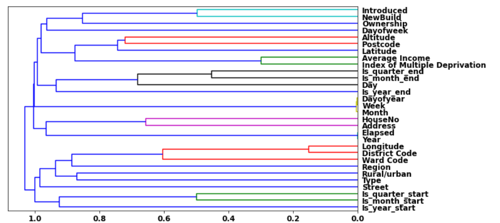
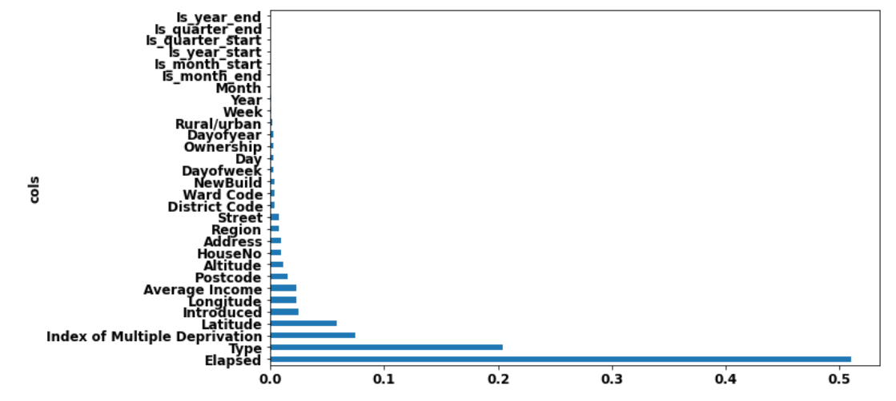
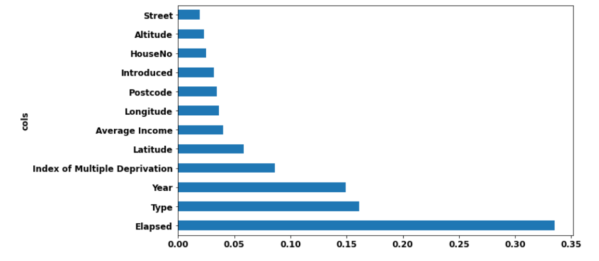

import os
import requests
import wget
import pandas as pd
from fastbook import *
from kaggle import api
from pandas.api.types import is_string_dtype, is_numeric_dtype, is_categorical_dtype
from fastai.tabular.all import *
from sklearn.ensemble import RandomForestRegressor
from sklearn.tree import DecisionTreeRegressor
from dtreeviz.trees import *
from IPython.display import Image, display_svg, SVG
pd.options.display.max_rows = 20
pd.options.display.max_columns = 8
Swansea House Prices- Part 2
Using machine learning to predict property prices- using property sales
- toc: true
- badges: true
- categories: [jupyter, python, randomforests, tabulardata, sklearn]

Overview
In part 1 (https://thomashsimm.com/2021/08/04/Swansea-House-Price-Report.html) house price predictions were done using Census regions and information about the locations.
Whereas, in this part the main focus is on using property sales data to obtain price predictions.
Import modules and prepare the data
Some imports
Create a local path
path = URLs.path('SwansProp')
Path.BASE_PATH = path
pathPath('.')if not path.exists():
path.mkdir(parents=true)Download the data
Get the property sales from https://www.doogal.co.uk/PropertySalesCSV.ashx?area=
And then the postcode details from https://www.doogal.co.uk/UKPostcodesCSV.ashx?Search=SA for
- lattitude and longitude
- Census data and related data
- Avg income
- Deprivation index
- etc
Unique postcode starts SA1 SA2 SA3 SA4 SA5 SA6 SA7 SA8 SA9 SA10 SA11 SA12 SA13 SA80 SA99
try:
os.mkdir('data')
except:
pass
pcodesSA=['SA1', 'SA2', 'SA3', 'SA4', 'SA5', 'SA6', 'SA7', 'SA8',
'SA9', 'SA10' ,'SA11', 'SA12', 'SA13', 'SA14','SA15','SA18']‘A’ Property Sales Data
Download the data
url='https://www.doogal.co.uk/PropertySalesCSV.ashx?area='
for pc in pcodesSA:
patha=path/'{}.csv'.format(pc)
wget.download(url+pc, str(patha))100% [............................................................................] 935424 / 935424Create a dataframe from the downloaded csv files
for i,pc in enumerate(pcodesSA):
patha=path/'{}.csv'.format(pc)
dfTemp=pd.read_csv(str(patha))
if i==0:
df=dfTemp
print(i)
else:
df=df.append(dfTemp)
print(df.shape[0])
df.reset_index(drop=True, inplace=True)0
19432
35015
47639
67896
79210
92148
99680
104480
109669
122570
136404
147937
155697
169021
183674
195094df.head()| Date | Address | Postcode | Price | Type | Ownership | NewBuild | |
|---|---|---|---|---|---|---|---|
| 0 | 2021-10-22 | 60 Danygraig Road, Port Tennant | SA1 8LZ | 192000 | Terraced | Freehold | No |
| 1 | 2021-10-01 | 2 Camona Drive, Maritime Quarter | SA1 1YJ | 179950 | Flat | Leasehold | No |
| 2 | 2021-09-24 | 36 Balaclava Street, St Thomas | SA1 8BR | 140000 | Terraced | Freehold | No |
| 3 | 2021-09-21 | 7 Abernethy Square, Maritime Quarter | SA1 1UH | 133000 | Flat | Leasehold | No |
| 4 | 2021-09-17 | 6 Brynffordd, Townhill | SA1 6RA | 176000 | Semi-detached | Freehold | No |
import copy
dfOrig = copy.copy(df)‘B’ The PostCode data
Dwonload the data
url="https://www.doogal.co.uk/UKPostcodesCSV.ashx?Search=SA"
patha = path/'SA.csv'
wget.download(url, str(patha))-1 / unknown'C:\\Users\\44781\\.fastai\\archive\\SwansProp\\SA (1).csv'https://www.doogal.co.uk/PostcodeCsvFields.php
- Latitude
- Longitude
- Introduced
- Rural/urban
- Altitude
- Index of Multiple Deprivation
- Average income
[‘Latitude’,‘Longitude’,‘Introduced’,‘Rural/urban’,‘’Altitude’,‘Index of Multiple Deprivation’,‘Average income’]
Create a dataFrame from the data
dfCensus=pd.read_csv(str(patha),usecols=["Postcode","Ward Code","District Code",'Latitude','Longitude','Introduced','Rural/urban','Altitude','Index of Multiple Deprivation','Average Income'])
dfCensus| Postcode | Latitude | Longitude | District Code | ... | Rural/urban | Altitude | Index of Multiple Deprivation | Average Income | |
|---|---|---|---|---|---|---|---|---|---|
| 0 | SA1 1AA | 51.647984 | -3.923586 | W06000011 | ... | Urban city and town | 16.0 | 355 | 29200.0 |
| 1 | SA1 1AB | 51.618878 | -3.939834 | W06000011 | ... | Urban city and town | 10.0 | 1105 | 28600.0 |
| 2 | SA1 1AD | 51.618878 | -3.939834 | W06000011 | ... | Urban city and town | 10.0 | 1105 | 28600.0 |
| 3 | SA1 1AE | 51.618878 | -3.939834 | W06000011 | ... | Urban city and town | 10.0 | 1105 | 28600.0 |
| 4 | SA1 1AF | 51.619766 | -3.939424 | W06000011 | ... | Urban city and town | 13.0 | 36 | 28600.0 |
| ... | ... | ... | ... | ... | ... | ... | ... | ... | ... |
| 29399 | SA99 1ZU | 51.669997 | -3.945445 | W06000011 | ... | Urban city and town | 132.0 | 1230 | 30500.0 |
| 29400 | SA99 1ZW | 51.669997 | -3.945445 | W06000011 | ... | Urban city and town | 132.0 | 1230 | 30500.0 |
| 29401 | SA99 1ZX | 51.669997 | -3.945445 | W06000011 | ... | Urban city and town | 132.0 | 1230 | 30500.0 |
| 29402 | SA99 1ZY | 51.669997 | -3.945445 | W06000011 | ... | Urban city and town | 132.0 | 1230 | 30500.0 |
| 29403 | SA99 1ZZ | 51.669997 | -3.945445 | W06000011 | ... | Urban city and town | 132.0 | 1230 | 30500.0 |
29404 rows × 10 columns
Merge the two data frames
df=pd.merge(df,dfCensus)
df.columnsIndex(['Date', 'Address', 'Postcode', 'Price', 'Type', 'Ownership', 'NewBuild',
'Latitude', 'Longitude', 'District Code', 'Ward Code', 'Introduced',
'Rural/urban', 'Altitude', 'Index of Multiple Deprivation',
'Average Income'],
dtype='object')df.dtypesDate object
Address object
Postcode object
Price int64
Type object
Ownership object
NewBuild object
Latitude float64
Longitude float64
District Code object
Ward Code object
Introduced object
Rural/urban object
Altitude float64
Index of Multiple Deprivation int64
Average Income float64
dtype: objectdfOrig=dfOrig.iloc[df.index]Modify data ready for model
Add date details
From date get Year, Month, Week etc
df = add_datepart(df, 'Date')
df.columnsIndex(['Address', 'Postcode', 'Price', 'Type', 'Ownership', 'NewBuild',
'Latitude', 'Longitude', 'District Code', 'Ward Code', 'Introduced',
'Rural/urban', 'Altitude', 'Index of Multiple Deprivation',
'Average Income', 'Year', 'Month', 'Week', 'Day', 'Dayofweek',
'Dayofyear', 'Is_month_end', 'Is_month_start', 'Is_quarter_end',
'Is_quarter_start', 'Is_year_end', 'Is_year_start', 'Elapsed'],
dtype='object')Seperate details of address out
Want to sepaerate details of address so that
chx='Flat 30, Henllys, Wind Street, Swansea'
gives modAdd(chx)=('Swansea', 900, 'Henllys')
Or
chx='15A Bethania Road, Upper Tumble'
gives modAdd(chx)=('Upper Tumble', 15, 'Bethania Road')
def modAdd(address):
import re
split1 = address.split(',')
if len(split1)<2:
split1 = address.split(' ')
print('####',split1 )
FirstLine=split1[0]
Region = split1[-1]
try:
Region=re.search("[A-Za-z][A-Za-z\s]*",Region)[0]
except:
Region=Region
try:
HouseNo=re.search("[0-9]*",FirstLine)
# print(HouseNo)
HouseNo =int(HouseNo[0])
except:
FirstLine=split1[1]
HouseNo=re.search("[\s0-9]*",FirstLine)
try:
HouseNo =int(HouseNo[0])
except:
HouseNo=900
try:
Street=re.search("\s[A-Za-z][A-Za-z\s]*",FirstLine)
Street=Street[0]
Street=Street[1:]
except:
try:
Street=split1[1]
Street=re.search("\s[A-Za-z][A-Za-z\s]*",Street)[0]
Street=Street[1:]
except:
Street='NA'
# print(FirstLine)
# print('Region {}\n Number {} \n Street {} '.format(Region,HouseNo,Street))
return Region,HouseNo,Street
def addAdddets_df(df):
Street,HouseNo,Region=[],[],[]
for ita,oo in enumerate(df.index):
addTemp=df.iloc[ita].Address
RegionTemp,HouseNoTemp,StreetTemp=modAdd(addTemp)
Region.append(RegionTemp)
HouseNo.append(HouseNoTemp)
Street.append(StreetTemp)
df.insert(1,'Street',Street)
df.insert(1,'HouseNo',HouseNo)
df.insert(1,'Region',Region)
return dftry:
df.drop(columns=['Street','HouseNo','Region'],inplace=True)
except:
pass
df=addAdddets_df(df)Create train and validation sets
Do this randomly in this case 97:3 split
sza=np.shape(df)[0]
randAr=np.random.randint(0,100, size=sza)
cond = randAr>=3
train_idx = np.where( cond)[0]
valid_idx = np.where(~cond)[0]
splits = (list(train_idx),list(valid_idx))
valid_idx.shape[0]/train_idx.shape[0]Specify which column we are fitting to
dep_var = 'Price'
# for this fit to the log of it
df[dep_var] = np.log(df[dep_var])Split into test and validation and convert to TabularPandas
cont,cat = cont_cat_split(df, 1, dep_var=dep_var)
procs = [Categorify, FillMissing]
to = TabularPandas(df, procs, cat, cont, y_names=dep_var, splits=splits)
xs,y = to.train.xs,to.train.y
valid_xs,valid_y = to.valid.xs,to.valid.yWhat are the columns?
#hide
import os
import pickle
cda = 'C:\\Users\\44781\\Documents\\GitHub\\SwanseaProperty'
cda = cda + '\\pickles\\'
with open(cda+'RFrand_to.pkl', 'rb')as f:
to = pickle.load(f)
with open(cda+'RFrand_xs_final.pkl', 'rb')as f:
xs = pickle.load(f)
with open(cda+'RFrand_y.pkl', 'rb')as f:
y = pickle.load(f)[ii for ii in to.all_col_names]['Address',
'Region',
'Street',
'Postcode',
'Type',
'Ownership',
'NewBuild',
'District Code',
'Ward Code',
'Introduced',
'Rural/urban',
'Is_month_end',
'Is_month_start',
'Is_quarter_end',
'Is_quarter_start',
'Is_year_end',
'Is_year_start',
'HouseNo',
'Latitude',
'Longitude',
'Altitude',
'Index of Multiple Deprivation',
'Average Income',
'Year',
'Month',
'Week',
'Day',
'Dayofweek',
'Dayofyear',
'Elapsed',
'Price']Some functions to fit or get results of fit
def r_mse(pred,y): return round(math.sqrt(((pred-y)**2).mean()), 6)
def m_rmse(m, xs, y): return r_mse(m.predict(xs), y)
def r_abs(pred,y): return round( (np.abs( np.exp(pred)-np.exp(y) ).mean()), 0)
def m_abs(m, xs, y): return r_abs(m.predict(xs), y)/1000
def rf(xs, y, n_estimators=400, max_samples=100_000,
max_features=0.5, min_samples_leaf=5, **kwargs):
return RandomForestRegressor(n_jobs=-1, n_estimators=n_estimators,
max_samples=max_samples, max_features=max_features,
min_samples_leaf=min_samples_leaf, oob_score=True).fit(xs, y)Fit the model and optimise
Basic model with 4 nodes
m = DecisionTreeRegressor(max_leaf_nodes=4)
m.fit(xs, y);m_rmse(m, xs, y),m_rmse(m, valid_xs, valid_y)(0.511491, 0.503983)Increase the number of leafs, reduces the errors
m = DecisionTreeRegressor(min_samples_leaf=25)
m.fit(to.train.xs, to.train.y)
m_rmse(m, xs, y), m_rmse(m, valid_xs, valid_y)(0.338283, 0.370846)Using the modified function above
m = rf(xs, y)
m_rmse(m, xs_imp, y), m_rmse(m, valid_xs_imp, valid_y)(0.287589, 0.335017)Look at which columns are important
cluster_columns(xs)
def rf_feat_importance(m, df):
return pd.DataFrame({'cols':df.columns, 'imp':m.feature_importances_}
).sort_values('imp', ascending=False)fi = rf_feat_importance(m, xs)
def plot_fi(fi):
return fi.plot('cols', 'imp', 'barh', figsize=(12,7), legend=False)
plot_fi(fi[:30]);
Keep ones with most importance
Reduces columns to use from 30 to 17
to_keep = fi[fi.imp>0.01].cols
len(to_keep),len(fi.cols)(13, 30)# Get rid of the address one- is a number for each address
to_keep=to_keep[to_keep!='Address']xs_imp = xs[to_keep]
valid_xs_imp = valid_xs[to_keep]
m_imp = rf(xs_imp, y)
m_rmse(m_imp, xs_imp, y), m_rmse(m_imp, valid_xs_imp, valid_y)(0.296979, 0.335829)fi2 = rf_feat_importance(m_imp, xs_imp)
def plot_fi(fi2):
return fi2.plot('cols', 'imp', 'barh', figsize=(10,6), legend=False)
plot_fi(fi2[:30]);
Save the results
Combine the test and valid datasets
xsAll=pd.concat([xs_imp,valid_xs_imp])
yAll = pd.concat([y, valid_y])import os
import pickle
cda = os.getcwd()
cda = cda + '\\pickles\\'
# Saving the objects:
with open(cda+'RFrand_New4varB.pkl', 'wb') as f:
pickle.dump([m_imp, to, xsAll, yAll], f)np.exp(0.335829)1.3990997582955578Get the Predictions
Reload the data saved
import os
import pickle
with open(cda+'RFrand_New4varB.pkl', 'rb')as f:
m2, to2, xsAll2, yAll2 = pickle.load(f)First need a way to convert sale date to today’s date
Function takes the dataFrame and changes ‘Date’ features to today’s date Taken from fastai functions
def add_datepart(df, field_name, prefix=None, drop=True, time=False):
"Helper function that adds columns relevant to a date in the column `field_name` of `df`."
import re
import pandas as pd
import numpy as np
def ifnone(a, b):
"`b` if `a` is None else `a`"
return b if a is None else a
def make_date(df, date_field):
"Make sure `df[date_field]` is of the right date type."
field_dtype = df[date_field].dtype
if isinstance(field_dtype, pd.core.dtypes.dtypes.DatetimeTZDtype):
field_dtype = np.datetime64
if not np.issubdtype(field_dtype, np.datetime64):
df[date_field] = pd.to_datetime(df[date_field], infer_datetime_format=True)
make_date(df, field_name)
field = df[field_name]
prefix = ifnone(prefix, re.sub('[Dd]ate$', '', field_name))
attr = ['Year', 'Month', 'Week', 'Day', 'Dayofweek', 'Dayofyear', 'Is_month_end', 'Is_month_start',
'Is_quarter_end', 'Is_quarter_start', 'Is_year_end', 'Is_year_start']
if time: attr = attr + ['Hour', 'Minute', 'Second']
# Pandas removed `dt.week` in v1.1.10
week = field.dt.isocalendar().week.astype(field.dt.day.dtype) if hasattr(field.dt, 'isocalendar') else field.dt.week
for n in attr: df[prefix + n] = getattr(field.dt, n.lower()) if n != 'Week' else week
mask = ~field.isna()
df[prefix + 'Elapsed'] = np.where(mask,field.values.astype(np.int64) // 10 ** 9,np.nan)
if drop: df.drop(field_name, axis=1, inplace=True)
return dfThe next function uses the above function to update the date details.
Then looks up the address given so that predictions can be made. This is because address are not in xsAll2 dataFrame
xsAll2.columnsIndex(['Elapsed', 'Type', 'Year', 'Index of Multiple Deprivation', 'Latitude',
'Average Income', 'Longitude', 'Introduced', 'Postcode', 'Altitude',
'HouseNo', 'Street'],
dtype='object')# seperate columns into those related to date and those not
colsNoDate=[ 'Type', 'Index of Multiple Deprivation', 'Latitude',
'Average Income', 'Longitude', 'Introduced', 'Postcode', 'Altitude',
'HouseNo', 'Street']
colsDate=['Elapsed','Year']
def get_predTodayNotExact(m,address,toTEMP,xs_final,y):
"""
Given model m, address, initial pd of houses to, and adjusted pd xs_final
output is house price prediction
"""
import copy
colsAll=xs_final.columns
#columns with dates need to remove
colsDate=['Elapsed','Year']
xsNoDate=copy.copy(xs_final.drop(columns=colsDate))
# add date part to dataframe
xsNoDate['Date'] = pd.to_datetime("today")
xsNoDate = add_datepart(xsNoDate, 'Date')
xs_finalTEMP=xsNoDate.loc[:,colsAll]
# each address has a unique number
aa=toTEMP.classes['Address']
# findwhich number is address give (take 1st if more than 1)
try:
ii=[ii for ii,aa1 in enumerate(aa) if aa1== address][0]
# 1 address can have multiple sales so we need index in dataframes
ii=toTEMP[toTEMP['Address']==ii].index[0]
preda = np.round( np.exp( m.predict(xs_finalTEMP.loc[ii:ii]) )/1000 ,1)
prev = np.round( np.exp(y.loc[ii])/1000 ,1)
typeAll=toTEMP.classes['Type']
typa=typeAll[xs_finalTEMP.loc[ii:ii,'Type']][0]
except:
aa=toTEMP.classes['Address']
aaStreet=toTEMP.classes['Street']
ii=[ii for ii,aa1 in enumerate(aaStreet) if aa1== Street][0]
xsTemp=copy.copy( xs_finalTEMP[xs_finalTEMP['Street']==ii] )
xsTemp.reset_index(inplace=True,drop=True)
# find nearest house by houseno
No=np.array(xsTemp['HouseNo'])
yo=(np.abs(No-HouseNo))
yo1=np.min(yo)
# get index of the nearest house
yo=No[yo==yo1][0]
ii=[ii for ii,aa1 in enumerate(xsTemp.HouseNo) if aa1== yo][0]
xsTemp.loc[ii:ii,'HouseNo']=HouseNo
# If want to change house type
# xsTemp.loc[ii:ii,'Type']=2
# print(xsTemp.loc[ii:ii,'Type'])
# print(xsTemp.loc[ii:ii])
preda = np.round( np.exp( m.predict(xsTemp.loc[ii:ii]) )/1000 ,1)[0]
prev=0
typeAll=toTEMP.classes['Type']
typa=typeAll[xsTemp.loc[ii:ii,'Type']][0]
return preda, prev, typaaddress='20 Malvern Terrace, Brynmill'
get_predTodayNotExact(m2,address,to2,xsAll2,yAll2)(array([180.1]), 54.5, 'Terraced')Summary
def r_abs(pred,y): return round( (np.abs( np.exp(pred)-np.exp(y) ).mean()), 0)
def m_abs(m, xs, y): return r_abs(m.predict(xs), y)/1000
m_abs(m2, xsAll2, yAll2)#, m_abs(m, valid_xs_final, valid_y)23.159The average error in price predictions is £23,000
Which is comparable to values seen with regions and fairly good given the details of the houses used in the model are limited
This model is put into an app here https://thomashsimm.com/streamlit/randomforrests/houseprices/python/2022/02/23/SwanseaHousePriceApp.html
youtube: https://youtu.be/IGykZUeZqRA